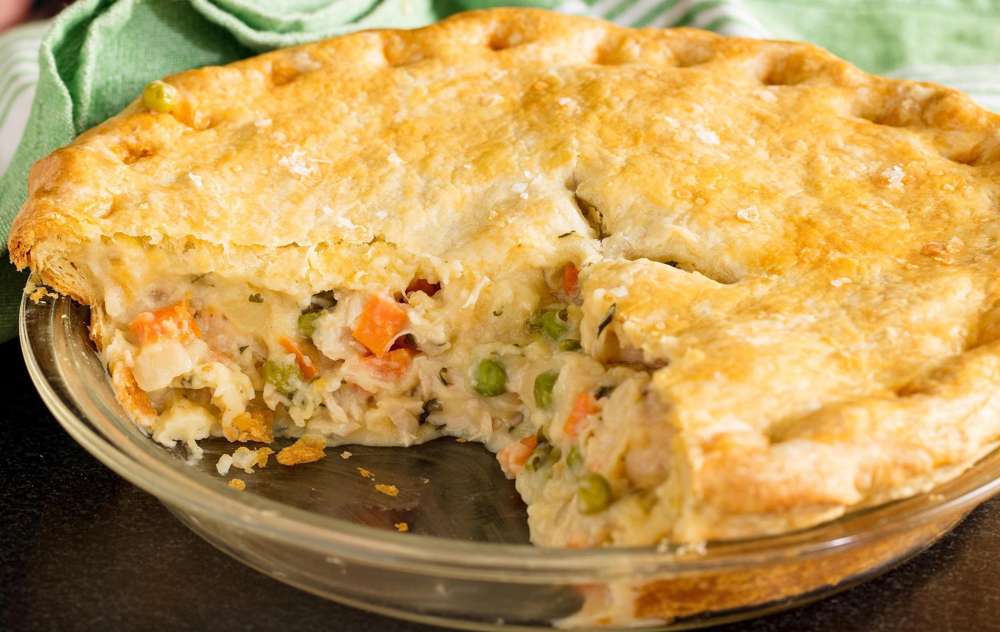
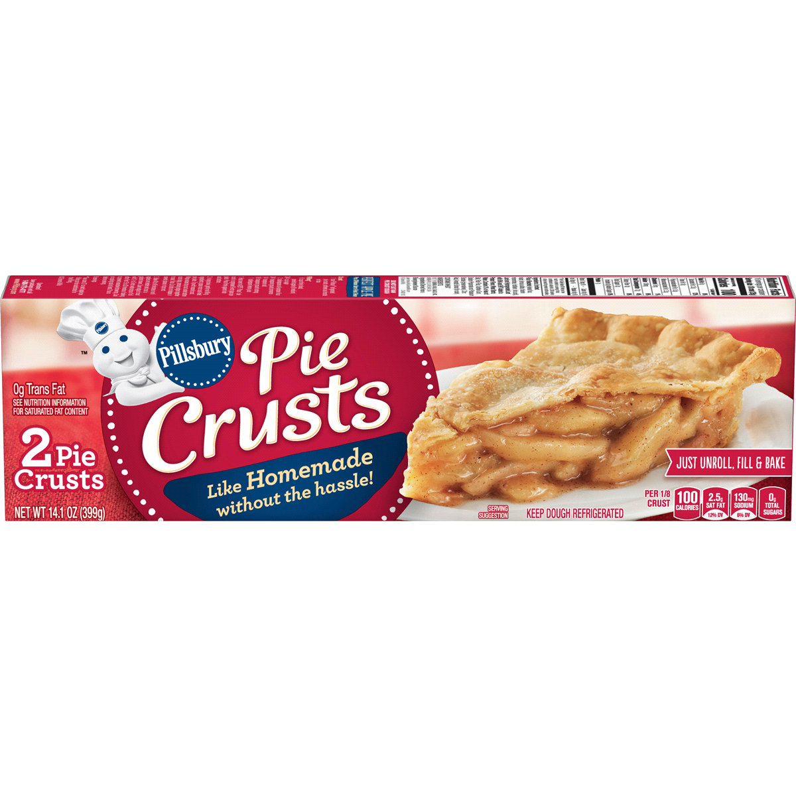
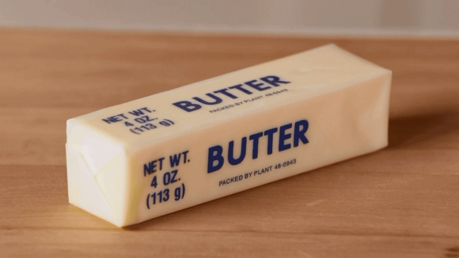
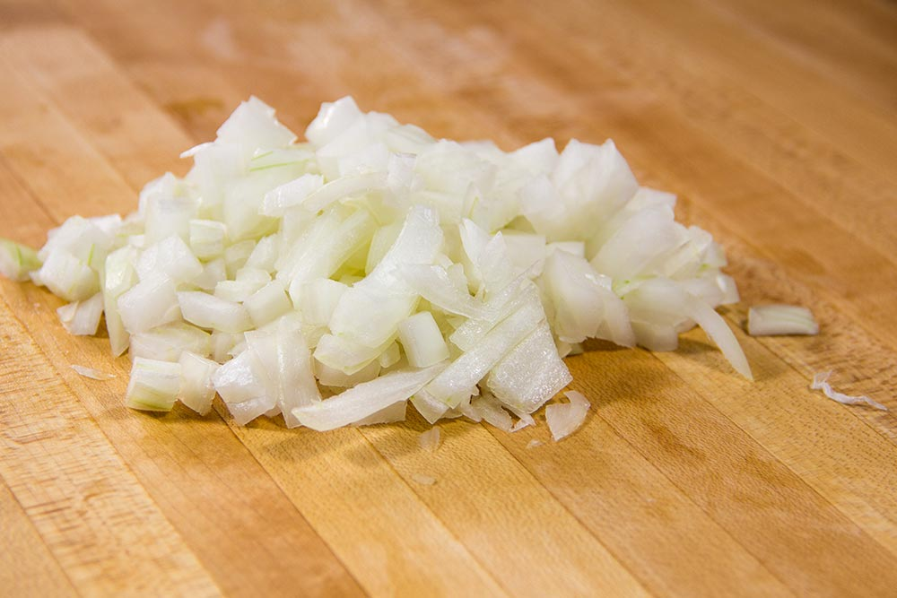
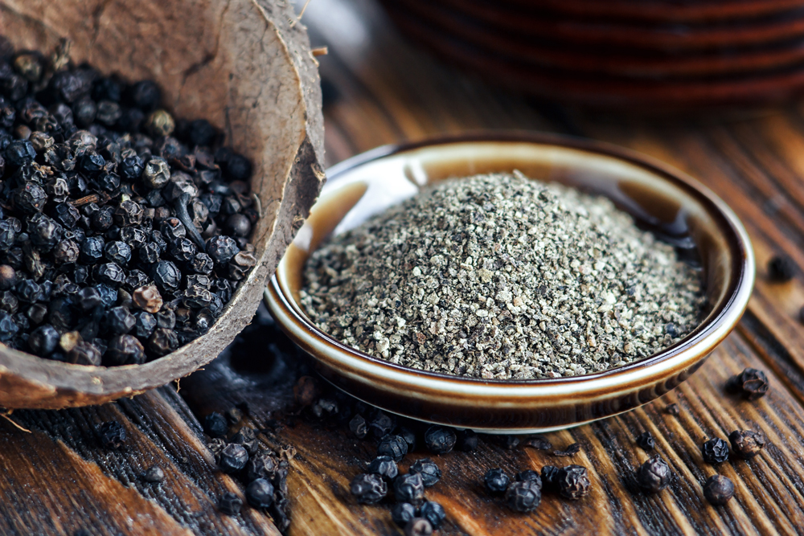
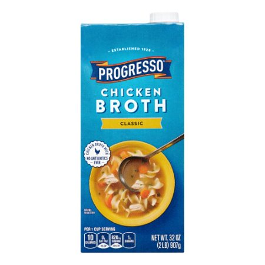
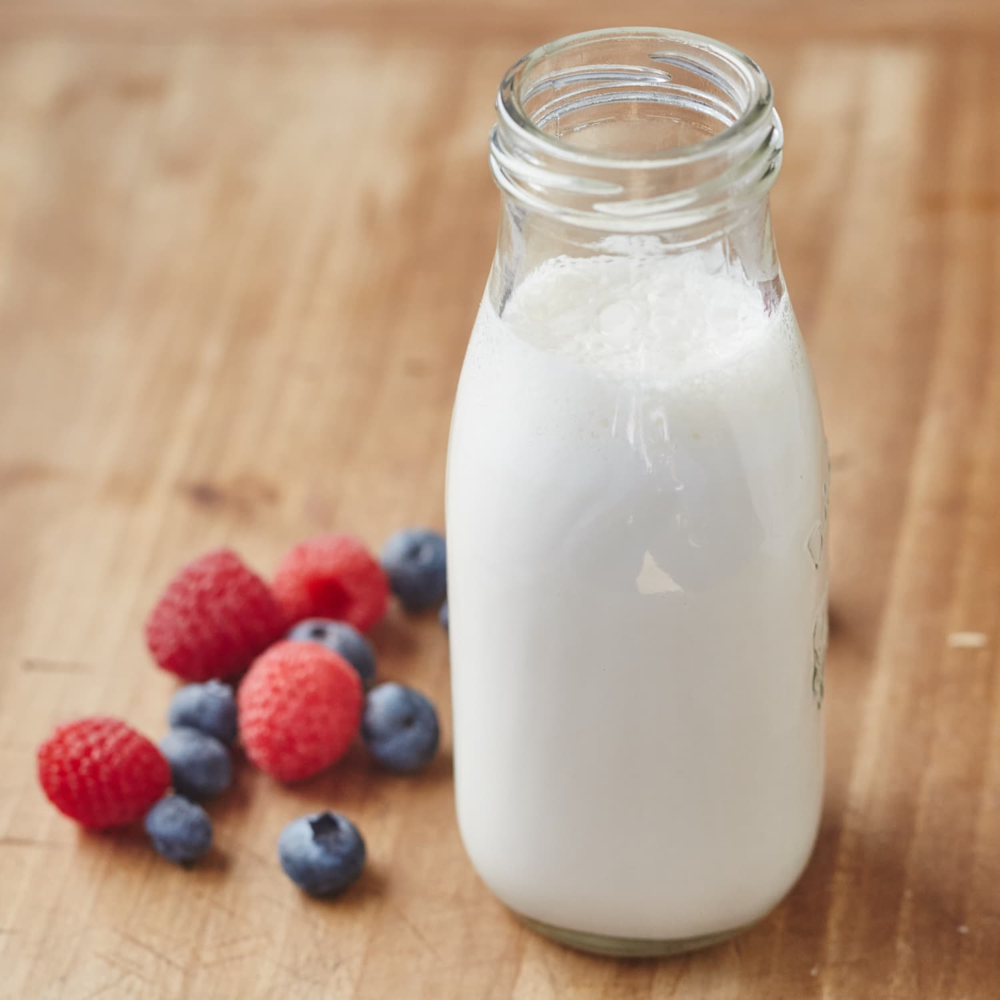
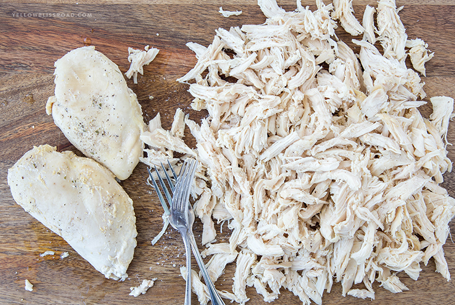
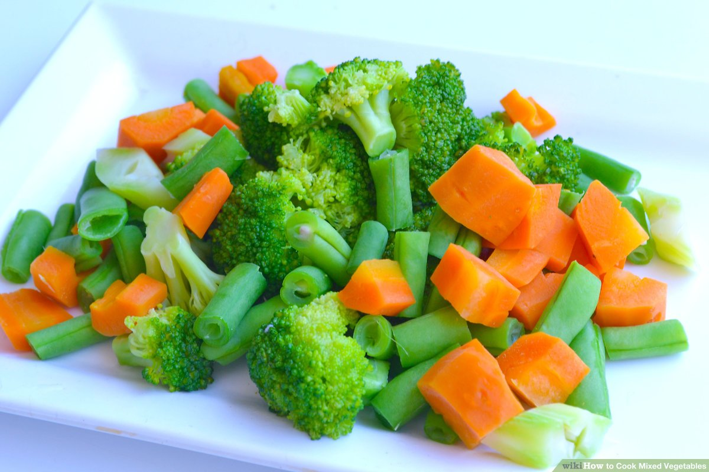

Home
Pot Pie

History:
This pie has been passed down in my family for three hundred years. My great grandma was the one to give it to me.
Ingredients:
- 1 box of Pillsbury pie crust

- 1/3 cup butter

- 1/3 cup chopped onion

- 1/3 cip all-purpose flour

- 1/2 teaspoon salt
- 1/4 teaspoon pepper

- 1 3/4 cups Progresso chicken broth

- 1/2 cup milk

- 2 1/2 cupps shredded cooked chicken

- 2 cups frozen mixed vegetables, thawed

Steps:
- Heat oven to 425°F. Prepare pie crusts as directed on box for Two-Crust Pie using 9-inch glass pie pan.
- In 2-quart saucepan, melt butter over medium heat. Add onion; cook 2 minutes, stirring frequently, until tender. Stir in flour, salt and pepper until well blended. Gradually stir in broth and milk, cooking and stirring until bubbly and thickened.
- Stir in chicken and mixed vegetables. Remove from heat. Spoon chicken mixture into crust-lined pan. Top with second crust; seal edge and flute. Cut slits in several places in top crust.
- Bake 30 to 40 minutes or until crust is golden brown. During last 15 to 20 minutes of baking, cover crust edge with strips of foil to prevent excessive browning. Let stand 5 minutes before serving.